Sunny Side Up
Period: 2021
Expertise: product design
Team: personal project
An App That Helps People Cope with Depression
Problem
Statistics show that about 10% of young adults have experience with depression. In the past year, quarantine life even increased the chances of getting depression. As a person who also experienced some sort of depression in the past, I’d like to learn how other people experience depression, and how I can help people like us cope with depression with a digital product.
Outcome
By conducting a few rounds of research and design iteration, I designed an app with three main features: “Eggtivities” that people can do to cope with depression, a forum where people can learn tips of coping with depression from the community, and a tool for seeking for professional help. This app’s target audience is people with depression at minor to intermediate Level.
Feature I –
Eggtivity
Provides suggestion, guidance, and reminder of activities they users can do to feel better
Feature II –
Forum & Resource
Learn more about their mental health and coping skills from the community and experts
Feature III –
Find a Therapist
With a short form and a review system, users can easily find a therapist the fit their needs
Needs
Finding
Main Pain Points
Coping Methods
Main Pain Points:
Insufficient Resource in Mental Health System and Feeling Alone and Helpless are the Main Problems
In the preliminary research, I conducted 8 interviews with people who either have experienced depression or helped their friends or family to deal with depression. At this stage, the research goal is simply to learn how the participants experience depression, and what problems they encounter during a depression episode. The key findings are:
Most people have some sort of negative experiences with the mental health system. The major problems are: not enough therapy resource, and the process of finding a therapist is hard
Connecting to someone is important because they can feel that they are not alone

Coping Methods:
There Are Various Methods People Use to Cope with Depression, Depending on Individual
It was conceivable that this app was going to help people cope with depression, or simply help them relax in some ways, so I also asked interviewees about this, and collected various kinds of coping methods that people use to cope with depression. The common ones include: exercise, pick up a hobby, or simply take care of themselves. This was particularly helpful for me while brainstorming ideas.

Persona
Target Audience:
People Who Are Experiencing Depression at Minor to Intermediate Level
In my original plan, I intended to design for all young adults (age of 18 to 35) who have depression. However, after the first round of interviews, I realized that everyone’s condition is different. I need to refine the persona so that I can determine whom this product is designed for. The target audience should also be those who:
are experiencing depression for the first time, or had depression before but never tried to deal with it
and they have minor to intermediate level of depression
The reason I narrow down to this population is because people who experience or try to deal with depression for the first time is the most vulnerable and helpless, and I only focus on minor to intermediate level of depression because if it’s a extremely severe depression, they probably should have more thorough treatment (or they are already having the treatment), and a simple app probably couldn’t do anything in that situation.
Concept
Ideation
3 Concepts
Concept I
Concept II
Concept III
Testing and Conclusion
3 Concepts:
Address Different Pain Points
Based on the needs finding results, I came up with three concepts that address different problems that people with depression have. I presented these concepts to 3 users, so I can know how users think about these ideas and which one I should include in the final product.
Concept I:
AI powered online counselling service + mental health analysis
For the online counselling service part, it is a chatbot that can answer users’ questions regarding depression and provide emotional support. For the analysis part, it is a questionnaire that users can fill out and the system will provide the analysis of their mental health issue.

Concept II:
An online community for users to talk about depression
It is a safe place where users can ask questions about their depression and what problems they have, and the community can answer their questions and provide advice on how to improve.

Concept III:
An interactive guidance of finding therapists
A short form users can fill out, and then the system will find the therapists that are the best fit for them based on their response. This system will also have additional features like a review system, photo of clinic environment, and video of the therapists speaking, which can better help them determine whether the therapist is a good fit.

Testing and Conclusion:
Include All Concepts, but Concept I Needs a Pivot From “Online Counselling” to “Emotional Support”
Testing and Conclusion: Include All Concepts, but Concept I Needs a Pivot From “Online Counselling” to “Emotional Support”
Concept I: Users have a neutral attitude toward concept 1, mainly because the technology (chat bot) seems not feasible, and although the analysis component can help them learn their mental health issues, it doesn’t necessarily make them feel better. However, they did indicate that the system can provide some sort of “emotional support.” One participant mentioned that they watch videos that say nice things to them that will make them feel calm and relaxed. Another participant mentioned that instead of an AI chatbot for counselling, they preferred this AI to guide them to do something relaxing. These two feedback gave me crucial information for the next few rounds of iteration.
Concept II: This one is helpful in terms of letting users know they are not alone and support each other in the community, but users are worried that the forum will be full of negative emotion, and lots of people with depression don’t like to listen to the negative thoughts about depression from others.
Concept III: This one is most desirable and helpful. It’s an important piece that should always be available in the app, because it’s a necessary intervention when users need professional help.
Design:
Concept I
Initial Design
Testing and Iteration
Initial Design:
Positive Quote + Activity Suggestions
Regarding the “emotional support” element, some participants mentioned that they sometimes watch videos that say nice things to them that will make them feel calm and relaxed. Instead of building an AI powered chatbot, I decided to design a positive quote generator and activity suggestions/reminder system to provide emotional support.
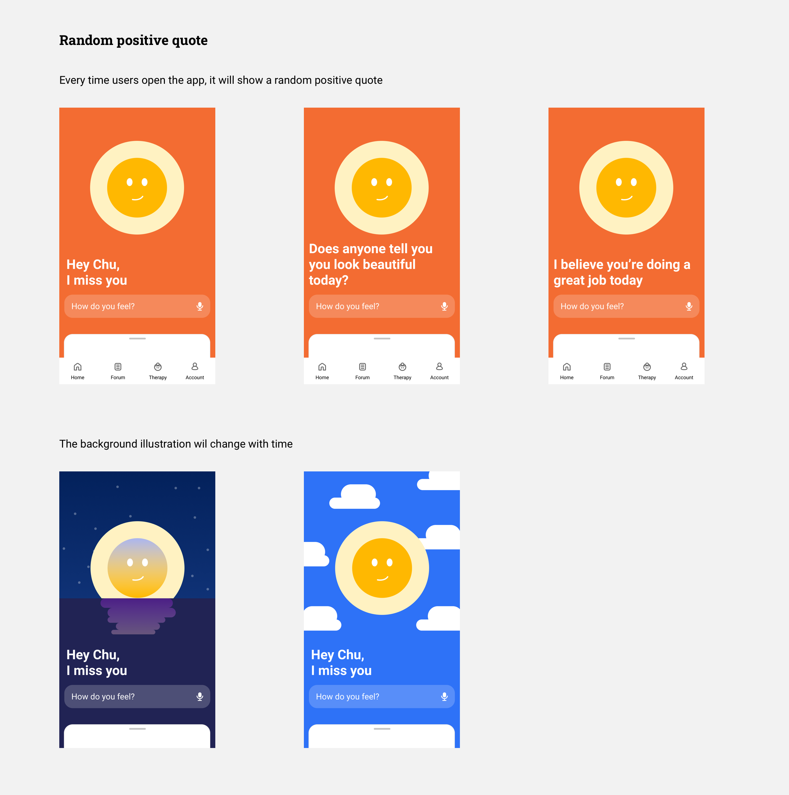 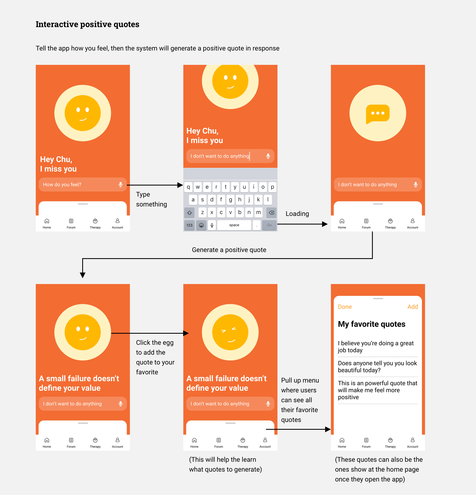 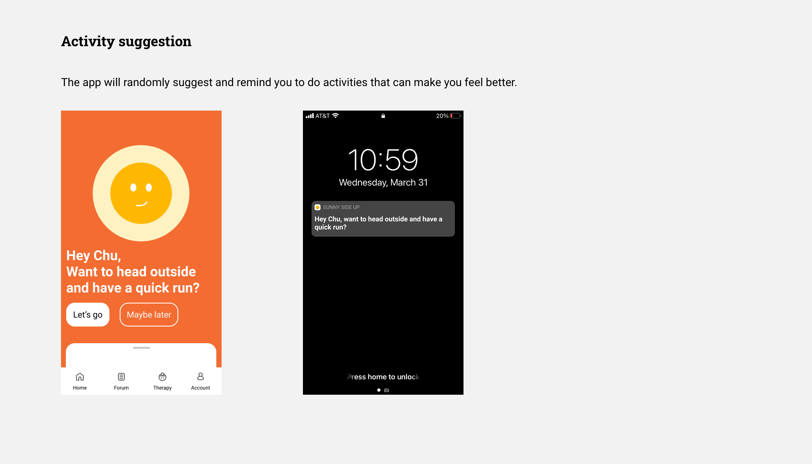Testing and Iteration:
“Eggtivity” (Activity Suggestion, Guidance, and Reminder)
Again, I ran a quick testing with two participants. Participants liked the aspect of activity suggestion and reminder, but they found that the positive quotes piece was less helpful. For the activity feature, participants also think it will be great if they can have more freedom of choosing and planning the activity. In conclusion, I will need another pivot for feature 1. Eventually, I only kept the “activity” component (and renamed it as “Eggtivity”, a wordplay that related to the app name. I will explain why below), which provides more freedom for users to choose and plan their activities. Users can click on the egg icon, “crack” an Eggtivity, set a goal, and start it.
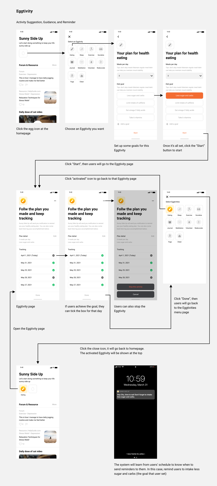Design:
Concept II
Initial Design
Testing and Iteration
Initial Design:
Forum (Sharing activities suggestions, coping tips, and positive stories)
Since almost all the users mentioned that they probably wouldn’t want to see any negative content regarding depression in this forum, I decided to make this forum only about sharing positive stories, suggestions on what activities to do, or what tools/apps they use to cope with depression.
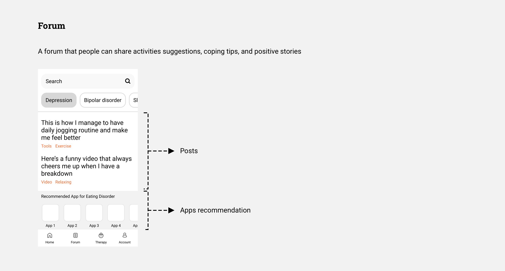Testing and Iteration:
Simplify the Content Format, Incorporate a Moderation System, and Add Content From Influencers
Although there were no major usability issues found in the testing, I simplified the content types. In the previous design, there were “posts” and “apps” suggestions. However, I figured that the “sharing apps” feature could be a little confusing for the users, and the interaction behind it could be too complicated. So I only kept the post format. On the other hand, I added a “content moderation system” and “content from influencer” based on participants feedback:
Content moderation system: For the mcommunity (forum) feature and the review system of finding a therapist, the design should think through how to moderate the content.
Content from influencer: Participants thought it can also consider pulling the content generated by influencers and thought leaders in the fields. So in the final design, there are two type of “post” – post from community members, and content crawled/collected from influencers or major health content website (added by the system).
Design:
Concept III
Initial Design
Testing and Iteration
Initial Design:
Find a therapist with More Detailed Information and a Review System
As mentioned in the ideation section, the key component of this feature is that users can fill out a form, and then the system will find the therapists that are the best fit for them based on their responses. It will also show a “matching score” and a “checklist” so the users can easily identify the best fit or even compare different options. On therapists’ profile page, there will be photos of the clinic environment, and video of the therapists speaking, which were considered crucial in the previous interviews and testings. Finally, there will be a review system that users can provide constructive feedback about how a therapist is (or not) helpful.
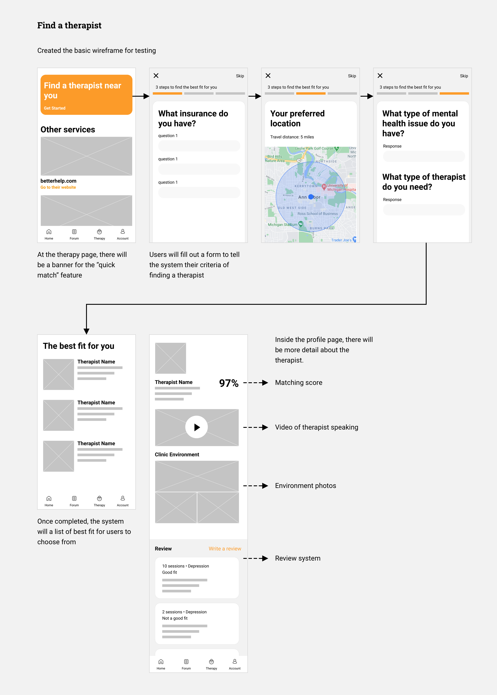Testing and Iteration:
Refine Layout and the Design of the Review System, and Add a Moderation System
First, I refined the previous wireframe and added more detailed interaction for this feature, and I also created the design for the regular therapist page (access through the bottom navbar), where the therapist profile won’t have a match score.
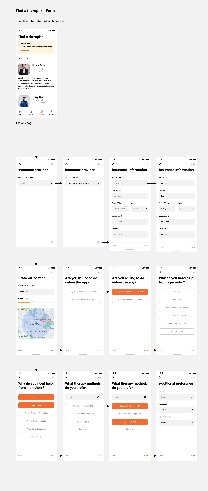For the review system, originally planned to ask users to provide pros and cons about a therapist. However, this format might not be able to elicit the most helpful information from a patient. I changed the format to asking users to leave a comment toward a certain aspect of the service/treatment they received. During the user testing, there were no major issues found. However, same as Concept II, participants also mentioned that they are worried about if someone would abuse the review system. Therefore, I added a report mechanism, allowing users to report inappropriate comments or assaultation.
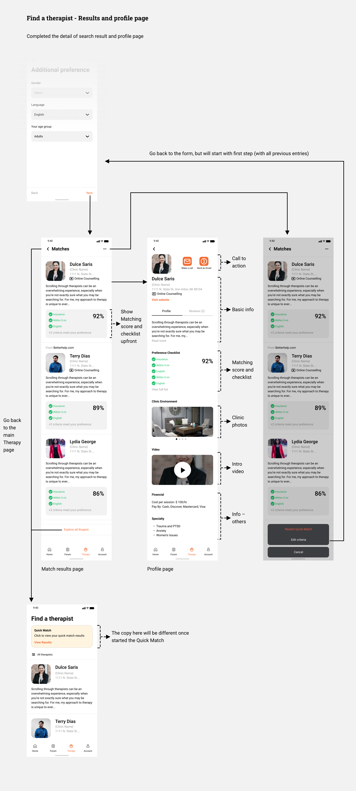 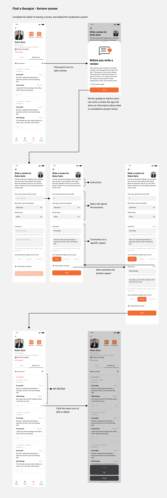Design:
Others
Homepage
The Disclaimer
Homepage
I included all features in the homepage, so users can easily access all the features without switching tabs. I put Eggtivity at top because it is the one users will probably interact most with. For the content of Forum and Resource, I only show the featured content that is most relevant to users’ preference. At the bottom, there’s a button that will take users to the Quick Match feature.
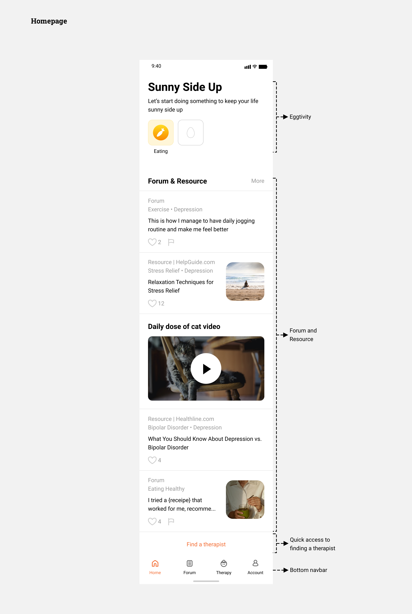The Disclaimer
During the user testing, a very important feedback I got was that this app should have some sort of disclaimer, informing users that the content of this app is not necessarily from medical professionals, and if they have severe conditions, please go to professional help.
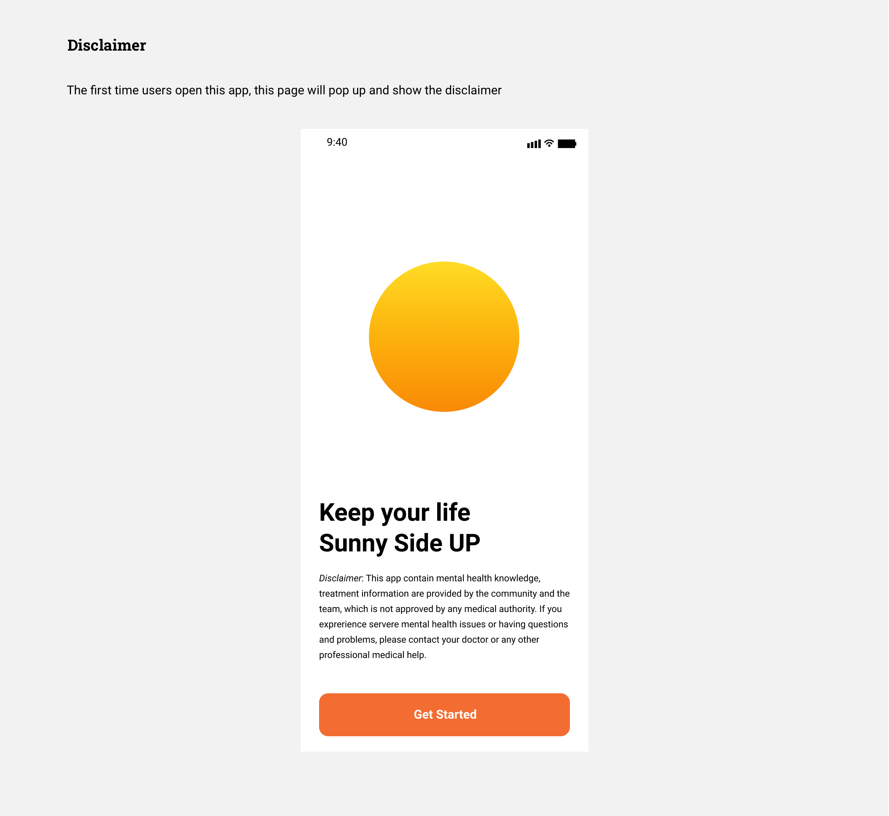Final
Product
Value Proposition
Branding
Features Overview and Demo
Value Proposition:
Provide Right Help at Right Moment in a Positive and Efficient Way
The goal of this app is to help people cope with depression. It encourages users to take actions, learn about their mental health with a community, and seek professional help when needed in a positive and efficient way.
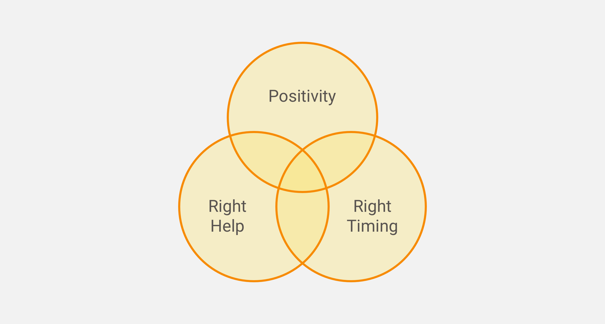Branding:
Sunny Side Up
One major differentiator of this app is the “positive” environment. Therefore, I called this app Sunny Side, which implies the sense of joyfulness and positivity. On top of that, I named Concept I’s activity as “Eggitivity”, which is a wordplay that extends the concept of Sunny Side Up (the way of cooking eggs) and reinforces the branding.
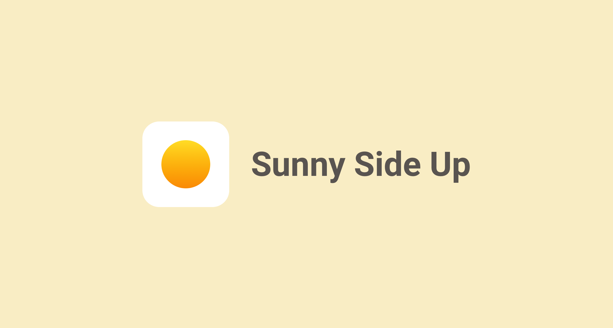Features Overview and Demo
On the home page, users can see all three features. At the top of the page, users can easily access the Eggtivity, which is the feature they will interact most with. At the bottom navbar, they can switch to the forum and the find therapists tool for more information when needed. Feature overview below:
Feature 1 – Eggtivity (activity): Provides suggestion, guidance, and reminder of activities they users can do to feel better
Feature 2 – Forum & Resource: Learn more about their mental health and coping skills from the community and experts
Feature 3 – Find a Therapist: With a short form and a review system, users can easily find a therapist the fit their needs
Promo
Materials
Promo Video
Promo Poster
Promo Video
At the end of the project, I made a promotional video that explains how this app can help people cope with depression.
Promo Poster
In addition, I also made a promotional poster that advertises this app, explaining how it works, and conveying the value of the Sunny Side Up app.
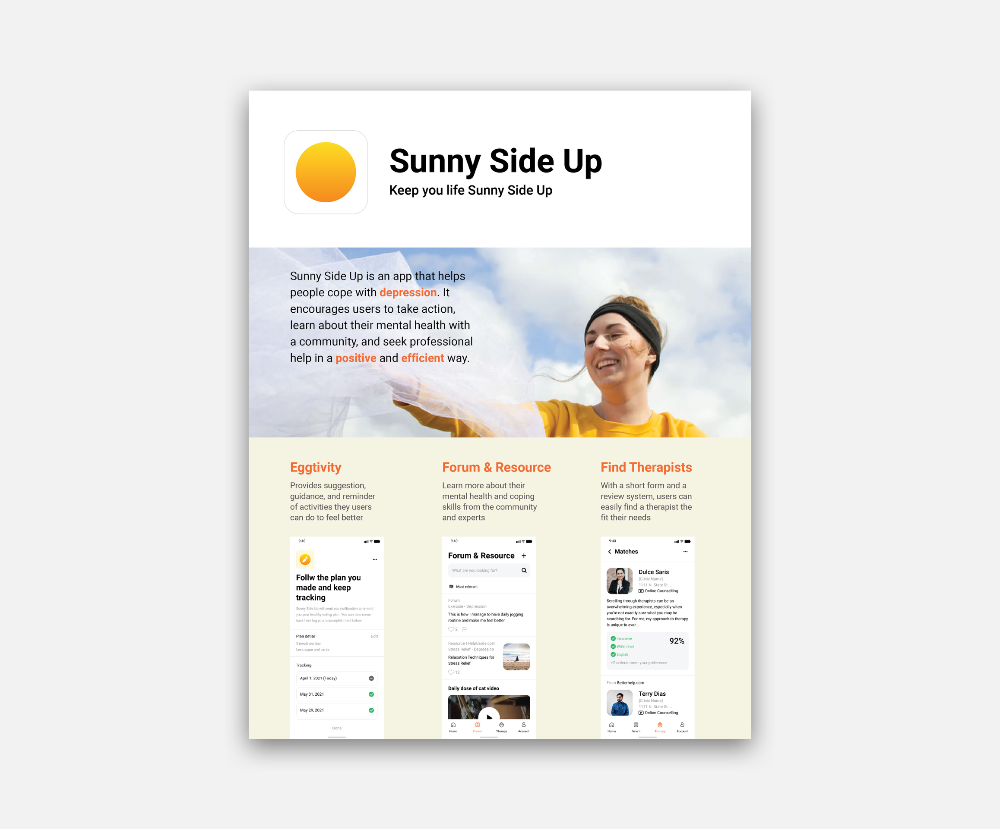If I Had
More Time
Feature I
Feature II
Feature III
Feature I:
Complete Prototype for All Eggtivities
In the final prototype, I only created the prototype for the “eating” activity. However, the interaction and content of each activity would be different. I should continue working on the design and testing for each activity.
Feature II:
Interaction Detail of Sharing a Post Could be Improved
For feature 2, the interaction design is almost complete, but how the design of sharing coping skills and positive stories/experiences could be improved along the way. In addition, perhaps the aspect of “sharing coping skills” can be integrated with the “Eggtivity” feature, i.e. community members can share how they plan their activities.
Feature III:
There Should Be More Guidance while Filling Out the Form
For feature 3, the interaction design is also complete, but there are more details that can be added to the flow. For example, in the Quick Match form, the step of choosing a therapy method can be a daunting task for those who don’t have relevant knowledge. In the profile page, there should be more detailed information about the therapist. A reference for that is the profile page on Psychology Today (PT). However, I should keep in mind that balancing the amount of information is critical because in the previous interviews, multiple participants mentioned that PT’s profile page has too much information. Last but not least, the review system will probably need a few more iterations. I should run more testing on which way is the most effective and ethical.
Reflection
Spent Too Much Time on Research
I am happy that I spent lots of time talking with participants in order to find their needs and define the problem space. However, I should’ve done it more efficiently. I would say that my final prototype and solution are in the right direction, but I haven’t done enough testing and interaction in the design process.
Should Focus on One Feature
As some of the classmates suggested, I should focus on one single feature for this app. I do think that combining the three features I have is definitely good for both the app and the users, but given the time limitation, and also due to the delay in the early stage, I couldn’t combine them together very well and integrate them as a one single elegant solution. If I focus on only one feature, I could have more time to validate the idea and refine the detailed interaction.